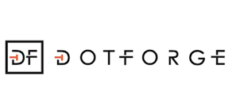

New Startup of the Year
This award is for new startups who have launched their service or product within the last two years. The startups can pre-revenue and the emphasis here is on potential as well as success so far. The winner will receive £2,000 in cash plus the following prizes:
Automatic shortlisting for Ignite Manchester. A full day of workshops and mentorship for all finalists.

Three one-on-one mentoring sessions and a visit to the dotforge Manchester offices.
This award is brought to you by G2
G2 Innovation is a design innovation consultancy thats supports businesses by providing the tools and resources that take the pain out of developing new ideas.